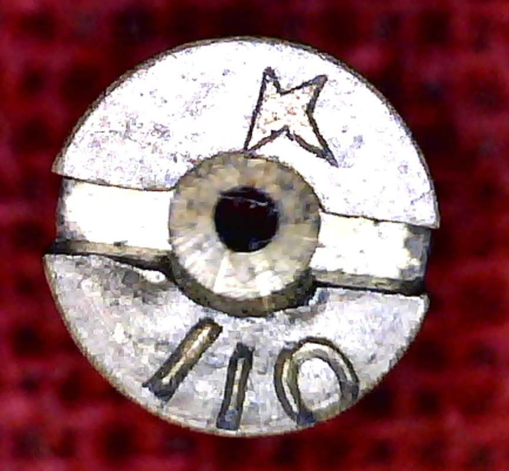
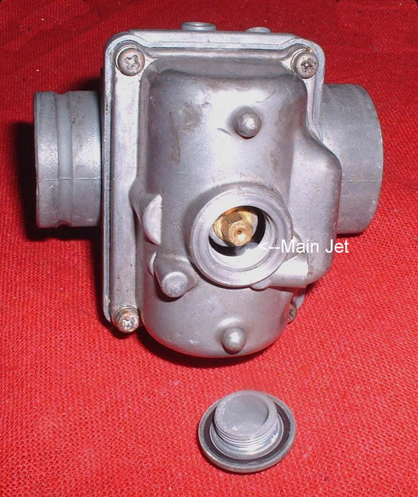
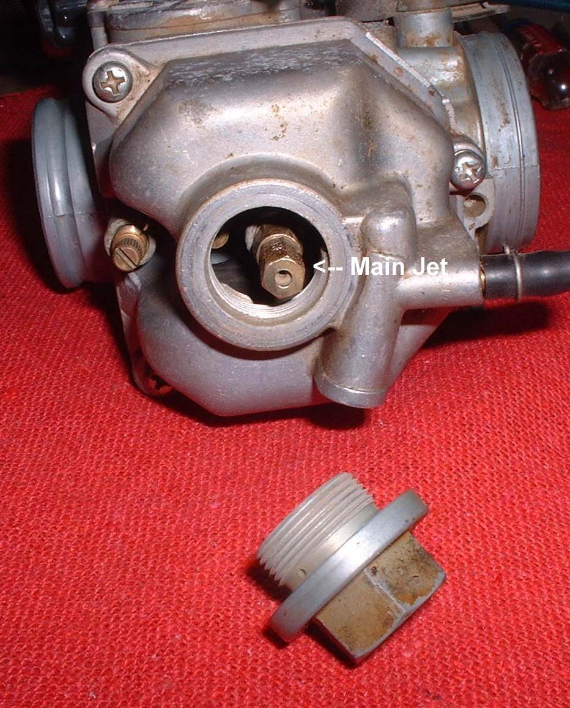
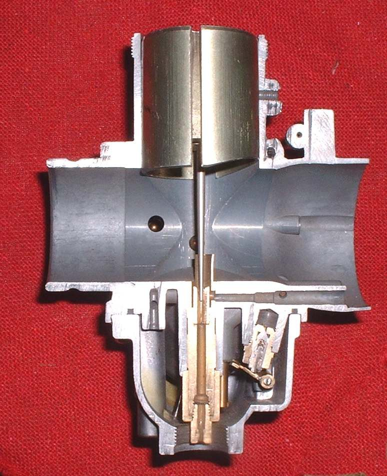

The main jet sets the mixture from about two thirds throttle to full throttle. It is easy to change and, after the jet needle, is the most useful jet. Many carburettors have a cap over it, so the jet can be reached without taking the carburettor off the engine. Brass and plastic jets are both used.
Factory settings are made with care. Change the main jet only for a reason, such as a new exhaust or air filter, or a confirmed lean or rich fault at full throttle. The jet size depends on the carburettor, so use the maker's size list and your manual.
Safety
- Fuel is flammable. Turn off the tap, and keep flames away.
- Do the plug test at full throttle only on a safe, clear road. A lean engine can overheat and be damaged.
You need
- A set of genuine jets for your carburettor (maker's logo stamped on each).
- A new or cleaned spark plug to read, and a safe place for steady runs.
Steps
- Warm the engine to its usual running heat. Turn the tap off.
- Remove the cap or float bowl and unscrew the main jet. Some jets come out with a washer. Keep the washer.
- Check the size stamped on the jet. Note it. Fit a jet one step larger to richen, or smaller to lean the mixture.
- Refit the cap or bowl with its gasket. Check that the bowl is sealed.
- Fit a new or clean spark plug. Ride at full throttle on the road for about a mile, then switch off the engine at once, while still at full throttle, and pull in the clutch to coast. Do not idle.
- Read the colour of the plug. See Read a spark plug. Light grey or white means lean. Black and sooty means rich.
- Change one size at a time, and test again.
Check your work
- Plug colour is the normal light brown or tan described in your manual.
- The engine pulls cleanly at full throttle and does not pink or run hot.
If it did not fix the problem
- Mid-range problems: Move the jet needle clip.
- Jet size is already right but the engine runs lean: Find an intake air leak.